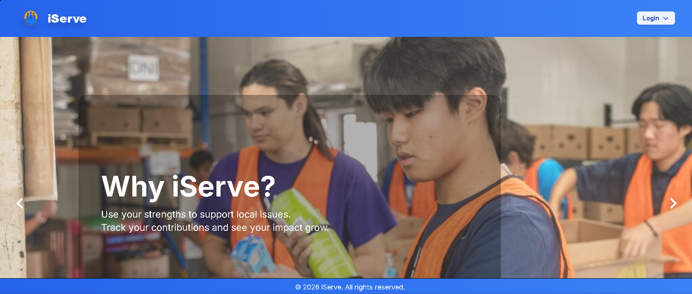

Custom dashboards & portals
Give each person the right view of the work, with roles, approvals, tracking, and reporting in one place.
See dashboard examplesCustom software & automation
I'm James, a full-stack developer. I build custom dashboards, web apps, and automations that help teams spend less time managing the process and more time doing the work.
Have a process in mind? A short email is a great place to start.
01 / What I do
From the first form submission to the final handoff, I can help turn repetitive, scattered work into a clearer system.
Give each person the right view of the work, with roles, approvals, tracking, and reporting in one place.
See dashboard examplesTurn an idea into a usable product, from user sign-in and matching to notifications and administration.
See an app exampleConnect the tools your team already uses so leads, follow-ups, content, and updates move without manual copying.
See automation examples02 / Selected work
These public versions use sample data so you can click through the workflows without a login or access to client information.
A helpdesk that routes requests to the right people, tracks response deadlines, and gives teams a clear record of every ticket.
Explore ticket intake, role-specific dashboards, escalation, and reporting.

A volunteer platform that helps people find suitable events while organizers review applications and manage participation.
Explore matching, join requests, approvals, and notifications.
The interactive demos are separate, browser-based reconstructions of commissioned projects. They use fictional data and do not connect to the original client systems.
03 / Automation examples
Small handoffs add up. These workflows show how I connect apps and build decision points into everyday operations.
Discuss an automation04 / The person behind the build
I build software around the way people actually work. My projects span helpdesk operations, volunteer coordination, and business automation, using the stack that fits the problem.
I care about the details that make a tool usable: clear roles, sensible handoffs, and a way to see what happened when something changes.
05 / Get in touch
Whether you have a detailed brief or just a process that needs fixing, send a few lines about the work. I'll take it from there.
Helpful to include: what you're building, who's using it, and your ideal timeline.
Connect on LinkedIn